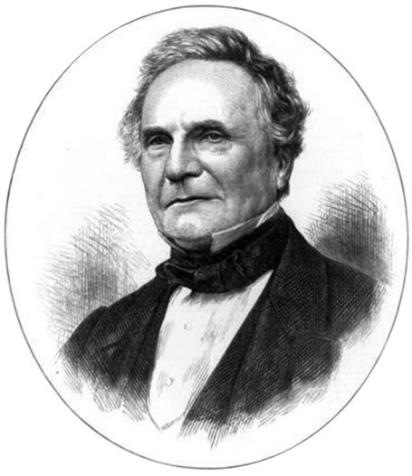
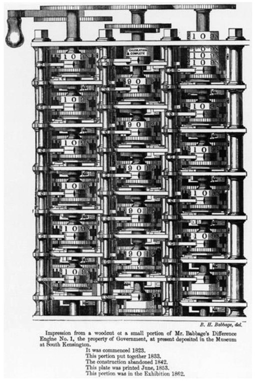
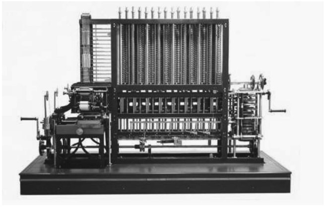
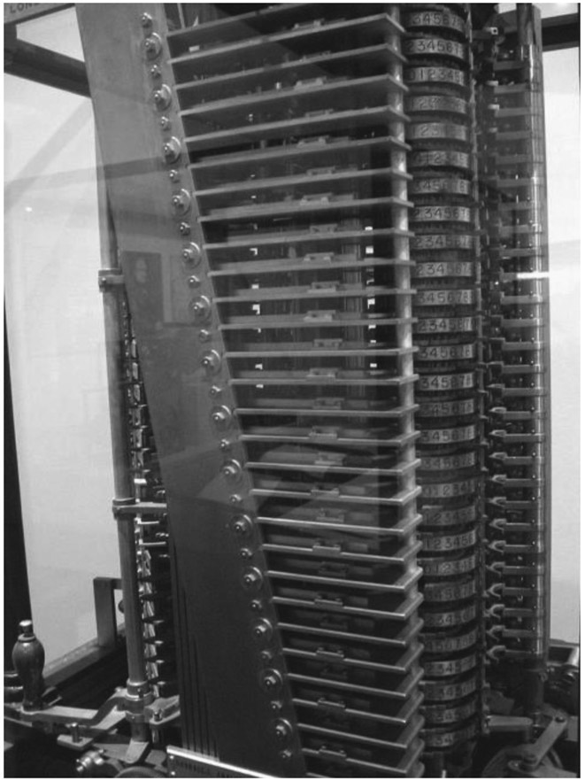

Charles Babbage: English (1791–1871)
In today’s modern world, the calculator and the computer are often taken for granted. However, we should look back to determine from where the concept of a calculator—or computer, as it was originally known—emanated. The honor of having first developed a machine that does calculation belongs to the English mathematician Charles Babbage, who was born in London on December 26, 1791.
He was the son of Benjamin Babbage, a London banker. Charles Babbage was educated mostly at home, since he was frequently ill. Even in these early days, he developed a love for mathematics. In 1810, he was accepted to study mathematics at Trinity College of Cambridge University, where in a short time he found himself more advanced than his instructors in mathematics. This prompted him to join a group of students also disappointed with the level of instruction. This group, called the Analytical Society, was devoted to exploring more-advanced issues in mathematics. During this time, he and his colleagues were disturbed by the inaccuracy of the numbers of logarithm tables. He felt better about calculating such values himself, which was his initial motivation to develop a machine that could do that task accurately. In 1817, he received his master’s degree from Cambridge University. Soon thereafter, he worked there as a lecturer of mathematics.
By 1816, he was elected a fellow of the Royal Society, and which eventually led him to participate in the founding of the Royal Astronomical Society in 1820. This was about the time when his interest began to take him in

Figure 30.1. Obituary portrait of Charles Babbage, published in the Illustrated London News, November 4, 1871. (Portrait derived from a photograph of Babbage taken at the Fourth International Statistical Congress, London, July 1860.)
the direction of developing a calculating machine. This initial interest had been lurking in his mind for some time. In 1821, Babbage developed the Difference Engine No.1 (see fig. 30.2). In 1822 he announced his findings to the Royal Astronomical Society in England at a lecture he had given to a select group. Although Babbage conceived of having his machine print out the results, initially an assistant had to serve as a scribe to copy the numbers that were generated. The following year he received the gold medal from the Astronomical Society as a reward for his developing this amazing machine. The work on further improvement of the machine was generously funded by the government. Babbage did not get along well with the funders, since many of their questions seem to have been, by his measure, ridiculous. Eventually, funding was withdrawn because it took so long to reach a workable model. However, it must be said that during this time in 1827 Babbage had a most unfortunate year. His father died, his wife died and two of his children died. He was advised to take time off and spent the better part of a year traveling on the continent of Europe. He returned to his work in 1828. Despite the lack of financial support, his model was completed in 1832, and it was able to assist in compiling mathematical tables. Yet he was displeased with the limitations of this machine, and so he began to develop one that could do a wider variety of calculations. Babbage played a significant role in the establishment of the British Association for the Advancement of Science, as popularized through a rather controversial paper he wrote in 1830. As influential as Babbage was, work was stopped on the difference machine in 1834 because the government was displeased with the progress shown to date.
During his constructive years Babbage remained at Cambridge University, where he held the Lucasian Chair of Mathematics from 1828 to 1839 but never presented a single lecture. Babbage was a very active member of the intellectual society and supported research in many scientific areas, such as cryptography which was then used by the British and American governments. During his efforts to continue to improve the development of these calculating machines, in 1843, a Swedish inventor named George Scheutz (1785–1873) was able to construct the Difference Machine based on Babbage’s design. In 1837, Babbage described a successor to the second version of the Difference Engine, and called it the Analytical Engine (fig. 30.3). This was a general-purpose computer whose design regarding memory was the forerunner of the electronic computers that followed, years later. The conceived memory was to hold 1,000 numbers composed of 40 decimal digits each. The machine was intended to perform the four arithmetic operations and square-root extraction. The programming language used was analogous to the modern-day assembly languages. Punch cards were used, one for arithmetic operations, one for numerical constants, and one for transferring numbers from storage to the arithmetic unit. Unfortunately, the machine was never successfully completed to the level Babbage desired, and it ran only a few tasks, with some obvious errors.
It is sad to note that Babbage died a frustrated man, since his visions were never fully realized, which he blamed on the government’s failure to provide the proper financial support. After Babbage’s death on October 18, 1871, his work was continued by his son Henry Prevost Babbage. In fact, even he had to do much of his own funding to continue his father’s work. In 1910, Henry Babbage constructed his version of the Analytical Engine, which was not programmable and had no storage (see fig. 30.4).
Babbage’s legacy includes many diverse contributions, such as having compiled reliable actuarial tables and having assisted in establishing the modern British postal system. He also invented a speedometer, occulting lights for lighthouses which are lights that stay on longer than the period of darkness, and a locomotive cow catcher, which is the metal device used by trains to clear the tracks of obstacles that would interfere with rail traffic. So in Charles Babbage we have the initiator of our computer world, who struggled to make a machine whose invention was motivated by what he saw as something desperately needed to correct earlier-accepted erroneous information.

Figure 30.2. Difference Engine No. 1. (Woodcut after a drawing by Benjamin Herschel Babbage, 1853.)

Figure 30.3. Analytical Engine. (Courtesy of Doron Swade.)

Figure 30.4. Henry Babbage’s Analytical Engine Mill, built in 1910, on exhibit at the London Science Museum. (Wikimedia Creative Commons, author: Marcin Wichary, licensed under CC BY-SA 2.0.)